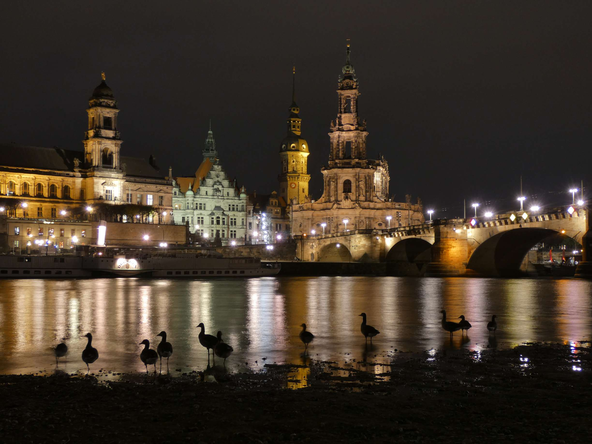

This blog is about beliefs, insights, and adventures on my rather unique journey. I tell my stories - Yet, this blog is truly not about me.
Thank you to everyone who ever helped me.
Tip: Read on the computer to enhance comprehension and focus.
Bonus Tip.
Bookmark this page ;-)
On the weekend, I will bike the marathon.
I suck at small talk – and that’s no surprise. As a matter of fact, I’m bad at most things. Even if I were to look at the things I consider myself to be good at, I still don’t know most things related to it. It takes a tremendous amount of effort to master anything, so there’s only time to master very little. Inspired by my recent read, I meditated on which skills I want to continue developing for the rest of my life, knowing very well that I will neglect almost everything else.
What I want to keep doing for the rest of my life.
1. Writing and programming
In mid-2023, I was looking for a way to promote my business. On a Wednesday evening, I got the idea to start a blog, and by Thursday noon, I had published and written three texts. To show off my self-improvement to the girl who had rejected me the next day, my blog’s purpose shifted from my products to my own life and character. That’s the story of how I started to write.
I don’t need to comment on the usefulness of writing, because writing is a proxy for thinking – hence, almost every monumental person to have ever existed was capable with words. Words provide infinite leverage, because they carry ideas. From a pragmatic perspective, work pretty much only consists of writing emails, one idea intersects another.
I also see writing as remarkably useful for the stoic way of living, one of reflection, rational thinking, and time spent alone with one’s mind.
Programming is remarkably similar to writing: You type something and some behavior changes, sentence by sentence, line by line. When I transitioned from writing to programming, I found it easy. My writing was clear because I was used to programming.
I have neglected programming in the past year, yet I must come to realize I like it; I find the leverage it delivers to be deeply satisfying. I started to program in 2020, when I was 13 years old, because I had a vision: a software company.
2. Learning and sports
Learning and sports do not sound related, but in reality, they are manifestations of the same core – a fortification against complacency. There are two forces in the universe: life and death. There’s yin and yang, good and evil, light and shadow. One force accelerates, and the other slows down. Almost everything in the universe is trying to suck your energy dry – thus, you need a mind a fortress. Do you see how learning and doing sports are the antithesis to death and darkness?
3. Love, prayer and meditation
Without these, nothing is possible.
*****
By looking at things I want to keep improving, I’ve laid out what I should spend my time on. What do I need to have ‘fun’ for if I have a purpose? I cannot imagine something to be more fun than winning all the time – and progress is winning.
Today, I stopped living in 2023's shadow.
The day started with a game of hide-and-seek. My almost ninety-year-old great-grandmother 'went out for a walk' in the night, and no one saw anything. It was a coincidence that I had gone to the toilet and saw the door to my sister's flat open. I started to look for her and found her rather quickly. Thank God, Amen.
The morning proved productive enough, though I didn't have much to do. University was not too special either.
Then, after university, I went for a 10 km—50-minute run. I see running as meditation—you must discard thoughts of fatigue and combat every demon attempting to crush your spirit. Today's speed is okay; it was my first longer run in six months. Back then, my best time was 39 minutes for 10 km because I skipped the gym and told myself that I couldn't be a beta. At that time, I was also deeply heartbroken. While running, I had time to think about things; I envisioned running a marathon. Unrelated note: When was the last time I've done something monumental?
"What you don't have in muscle, you have as hate," my very muscular friend said after seeing me train yesterday. After today's run, I'm able to feel passion again. Yesterday, during my meditation, I saw a vision that struck a tear in my right eye: I was standing in my living room with lit candles while it was completely dark outside. I wasn't alone, but dancing to classical music with my future hot blonde. While I sunk into her eyes, it was as if years of struggle flashed right before my eyes. It was at this moment that I was struck by deep gratitude for my emotions because they direct me towards greatness. I love hating things.
Despite feeling exhausted, when I returned home, I went on a walk with my grandmother and took photos of Dresden at night. This walk reminded me of 2020, 2021, 2022, and 2023, the hard yet fulfilling times I enjoyed so much. I leaned towards my edge, and thus I felt alive.

Chapter 11. At university.
Chapter 10. Moving away from my parents. A identy crisis and the death of my second business.
Chapter 9. Joy after returning to strength and overcoming a year of heartbreak. Holidays between school and university.
Chapter 8. Returning to strength and the end of 12th grade.
Chapter 7. Because I failed to resolve that inner conflict around her, I felt very depressed.
Chapter 6. The girl’s behavior drastically shifted after I published chapter 5, which made me think she was interested in me. That created a battle between my heart and mind, which led to a creative peak. Meanwhile, I was physically sick for months and couldn't go to the gym.
Chapter 5. The first time I stop trying to impress the girl I want.
Chapter 4. A month after the failure of my first business, and being heartbroken for four months, I try to return to strength multiple times.
Chapter 3. After working on my app business for three years and seeing it fail, I had a very blissful time. In the background, I grew increasingly weaker.
Chapter 2. A cute little story.
Chapter 1. A summer starting with heartbreak, burnout, and then hardcore discipline and deep bliss. These texts were clearly meant to impress the girl who rejected me.
Peak wordcount
June 2024: 289,700
Current wordcount
September 2024: 101,200
Why are some numbers missing?
Because these texts were unessential or I was to lazy to edit
them.
The story of this blog
On a Wednesday evening, back when I was 16, I got the idea to start a
blog. By Thursday
noon, I had written and published three texts. The next day, I got a rejection. Thus, my blog became a testament
to
the indomitability of my spirit.
With love, Kiryl P., 2024
Also interesting
My first
videos
My former
business
My former
self-improvment videos
Legal
Privacy
Disclaimer
© 2024 - All rights reserved